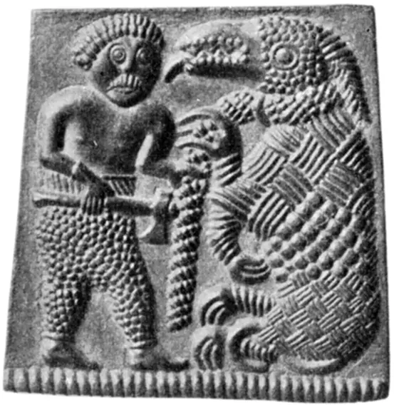
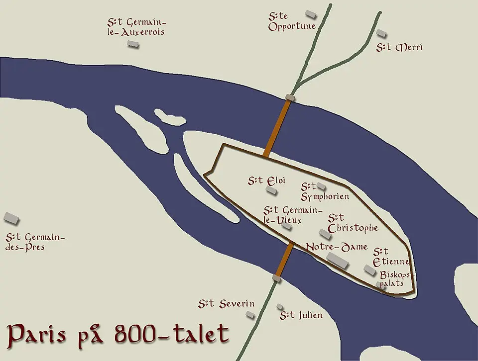

Người Viking đến Paris đúng ngày lễ Phục sinh
Tháng 3 năm 845, 120 thuyền Viking ngược sông Seine và vào Paris đúng Chủ nhật Phục sinh. Vua Charles Hói trả khoảng 2,5 tấn vàng bạc để họ rút đi.

Tháng 3 năm 845, một hạm đội 120 thuyền Viking, chở hơn 5.000 người theo một ước tính, tiến vào cửa sông Seine. Họ cướp Rouen rồi tiếp tục ngược dòng về phía Paris. Thủ lĩnh của họ được các nguồn Latin gọi là Reginherus, tức Ragnar. Cuộc tấn công kết thúc bằng một khoản tiền chuộc, và khoản tiền ấy dạy cho người Viking một bài học mà người Frank còn phải trả giá nhiều lần.
Ragnar là ai?
Từ lâu, người ta muốn đồng nhất Reginherus với Ragnar Lodbrok, người anh hùng trong các saga Bắc Âu. Giới sử học vẫn tranh cãi về điều này. Nguồn đầu tiên gọi Ragnar Lodbrok là vua Đan Mạch là Gesta Danorum của Saxo Grammaticus, viết khoảng năm 1200, một tác phẩm trộn lẫn truyền thuyết với sử liệu.
Có một chi tiết cho thấy cuộc tấn công có thể mang tính cá nhân. Khoảng năm 841, chính vua Charles Hói đã ban cho một người tên Reginherus đất ở Turholt, vùng Flanders. Sau đó Reginherus mất cả đất lẫn sự sủng ái của nhà vua. Một số nhà sử học cho rằng khoản tiền năm 845 có phần là bồi thường, và cuộc xâm lược là một vụ trả thù.
111 người bị treo cổ trên đảo


Charles quyết giữ tu viện hoàng gia Saint-Denis gần Paris. Ông tập hợp một đội quân nhỏ hơn quân Viking và chia làm hai, mỗi bên bờ sông một nửa. Quân Viking đánh tan một nửa, bắt 111 tù binh và treo cổ cả 111 người trên một hòn đảo giữa sông Seine. Theo các tài liệu, việc này vừa để dâng thần Odin, vừa để làm nửa đội quân còn lại khiếp sợ. Nửa ấy rút lui.
Ngày 29/3/845, Chủ nhật Phục sinh, quân Viking đến Paris. Thành phố khi ấy tập trung chủ yếu trên đảo Île de la Cité, chưa có tường thành như trong các tranh vẽ thế kỷ 19. Người Frank không tổ chức được phòng thủ. Quân Viking vào thành và cướp phá. Hội nghị tôn giáo của Paris phải dời sang Meaux.
Sử sách chép gì về khoản tiền chuộc

Theo Annales Bertiniani, biên niên sử Frank viết cùng thời, Charles trả 7.000 livre vàng và bạc. Một livre thời Charlemagne nặng khoảng 367 g, nên tổng số vào khoảng 2.570 kg. Một số tài liệu khác đưa ra con số lớn hơn nhiều, gần sáu tấn. Con số 2,57 tấn là phép quy đổi trực tiếp từ nguồn đương thời.
Charles bị chỉ trích nặng nề. Nhưng ông có những mối lo lớn hơn: tranh chấp với các anh em, nổi loạn ở các vùng, giới quý tộc bất mãn. Ông không tin các bá tước của mình đủ sức đánh bại đạo quân Viking. Trả tiền là mua thời gian. Trên đường về, quân Viking vẫn cướp thêm nhiều nơi dọc bờ biển, trong đó có tu viện Saint Bertin.
Rudyard Kipling sau này viết bài thơ "Dane-geld", với câu nổi tiếng: "once you have paid him the Danegeld / You never get rid of the Dane".
Dịch bệnh và vị thánh
Trong lúc vây Paris, dịch bệnh bùng phát trong trại Viking. Quân Viking cũng đã tấn công tu viện Saint-Germain-des-Prés ở ngoại ô Paris. Theo một câu chuyện do người trong phái đoàn của bá tước Cobbo sang triều đình Đan Mạch kể lại, Ragnar về đến chỗ vua Horik, khoe vàng bạc và nói chiếm Paris thật dễ. Rồi ông ngã quỵ, khóc, kể rằng sự kháng cự duy nhất ông gặp đến từ thánh Germain, vị giám mục Paris đã mất từ lâu. Khi thêm nhiều thuộc hạ của Ragnar chết, Horik sợ hãi, ra lệnh xử tử những người sống sót và thả các tù binh Cơ Đốc. Đây là lời kể từ phía Cơ Đốc giáo, cần đọc thận trọng.
Khoản tiền năm 845 là lần đầu tiên trong tổng cộng 13 lần người Frank trả tiền cho người Viking, khoản mà sau này gọi là Danegeld, dù chữ này chưa được dùng vào lúc ấy. Người Viking quay lại Paris nhiều lần trong những năm 860. Phải đến cuộc vây hãm năm 885 và 886, tường thành Paris mới đứng vững.
Rudyard Kipling sau này viết bài thơ "Dane-geld", với câu nổi tiếng: "once you have paid him the Danegeld / You never get rid of the Dane". Bài thơ vẫn được trích mỗi khi có tranh cãi về chuyện trả tiền chuộc con tin. Còn Ragnar thì sống lại trên màn ảnh: bộ phim truyền hình Vikings năm 2013 để Travis Fimmel đóng vai Ragnar Lodbrok.
Cuộc vây Paris năm 845 được ghi trong biên niên sử Frank cùng thời. Chỉ danh tính thật của người cầm đầu là vẫn nằm lưng chừng giữa sử và saga.